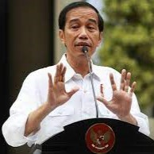

Biodata
Presiden Republik Indonesia
| Biodata | |
|---|---|
| Nama: Jokowi Dodo | |
| Lahir: Surakarta, Jawa Tengah, 21 Juni 1961 | |
| Pendidikan: Universitas Gajah Mada (1985) | |
| Jabatan Sebelumnya: Gubernur Daerah Khusus Ibukota Jakarta (2012-2014), Wali kota Surakarta (2005-2012) |
HGFZ Graduate Center
Masters In Project Management | Jan 2022-Mei 2022
Ciffmoor College
BA Production Design | 2006-2012